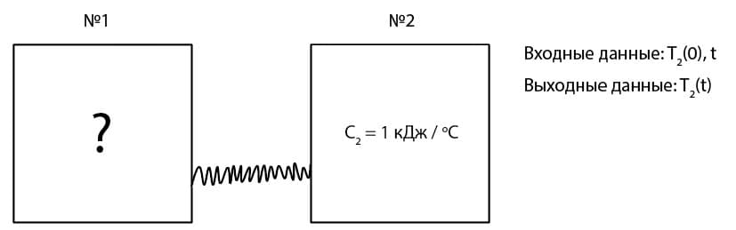

Y21 (2021) — English translation
The thermally insulated system consists of two vessels connected by a thin heat-conducting tube. The intrinsic heat capacity of the tube can be neglected; thermal equilibrium in each vessel and along the tube is established much faster than thermal equilibrium between the vessels.

The heat capacity of the body in vessel No. 2 is known: $C_2=1~кДж/{}^\circ\mathrm{C}$. You can set the initial temperature of vessel No. 2 ($T_{20}$, between $0^\circ\mathrm{C}$ and $100^\circ\mathrm{C}$.) and the time $t$ after connecting the vessels with a tube. The program offered to you shows the temperature in vessel No. 2 at time $t$ (set in minutes) after connecting the vessels with a tube ($t=0$).
exe The executable file for Windows is published on GitHub.
Source: https://pho.rs/p/244